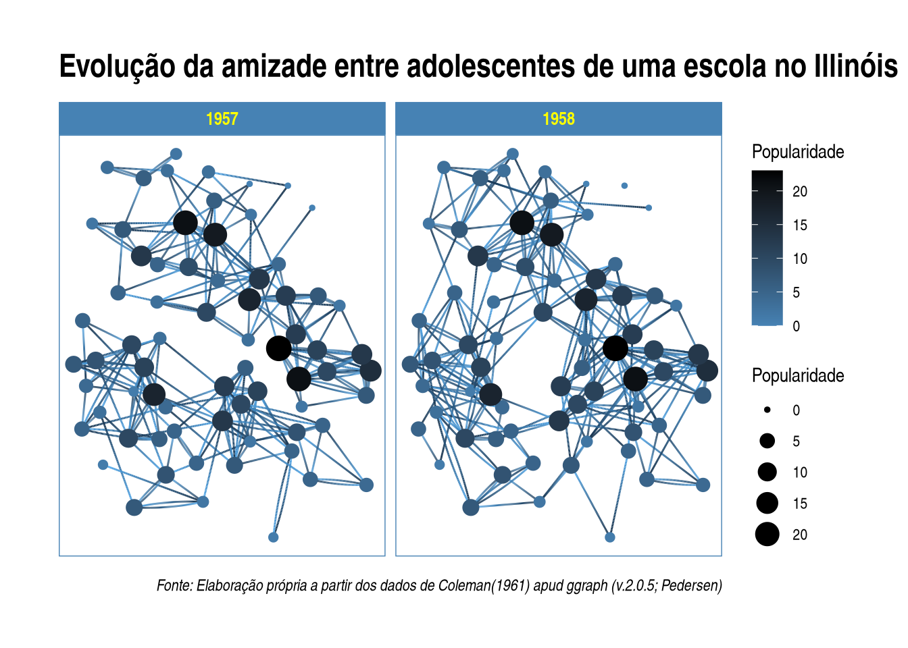

Capítulo 8 Análise Textual (text mining)
CAPÍTULO AINDA EM CONSTRUÇÃO
Conteúdo planejado:
- Introdução à análise textual via computador
- Tipos de abordagens: bag of words, semantic parsing.
- Frequência de termos (bag of words, n-grams, skipgrams, TF-IDF)
- nuvem de palavras (wordclouds), Polarized tag cloud, pyramid plot.
- Correlação de palavras, tipos de distâncias, dendogramas
- parts-of-speech tagging
- keyword extraction
- redes de palavras (word networks)
- Inteligência Artificial: clusterização; topic modelling
- Análise de sentimentos.
A análise computacional de textos é praticamente um sinônimo de Mineração de texto (text mining)
Há diversas funções nativas do R que usamos na mineração de texto/análise textual, mas também há diversos pacotes focados em análise textual com diversas ferramentas, como o
tidytext,
quanteda (QUantitative ANalysis TExtual DAta),
OpenNLP, Rweka,
languageR,
koRpus,
RcmdrPlugin.temis, RKEA (R Keyphrase Extraction Algorithm),
tm (Text Mining Package) e
qdap (Quantitative Discourse Analysis Package).
Estes são alguns dos mais famosos, com diversas ferramentas, mas há alguns outros pacotes focados em funções mais específicas, como o pacote wordcloud,
ggwordcloud (nuvem de palavras para o ggplot2, com mais opções)
por exemplo.
Há redundância entre estes pacotes, isto é, eles tem funções prórias que fazem a mesma coisa que funções de outros pacotes.
O pacote quanteda acompanha outros, como o quanteda.textstats, quanteda.textplots e o quanteda.textmodels que aconselhamos instalar também.
Um software bem conhecido de análise textual e que possui interface gráfica é o iramuteq (Interface de R pour les Analyses Multidimensionnelles de Textes et de Questionnaires), criado em 2009 por Pierre Ratinaud. Apesar de ainda ser bastante utilizado, o Iramuteq tem diversas limitações. Vimos um pouco sobre o RCommander. Há um plugin para ele dedicado à análise textual, o RcmdrPlugin.temis. Porém, sua última atualização ocorreu em 2018.
Dicas
- lista com diversos pacotes R, relacionados à Processamento de Linguagem Natural. Lista extensa, porém desatualizada.
8.1 Abordagens: saco de palavras (bag of words) e análise semântica (semantic parsing)
Na análise textual podemos analisar levando ou não em consideração a ordem das palavras ou sua função gramatical. Se o ordenamento ou a função das palavras não é importante, e queremos saber, por exemplo, apenas a frequência de certos termos, então faremos uma abordagem tipo “saco de palavras” (bag of words). Se precisamos saber as classes gramaticais, então a ordem das palavras é importante.
8.2 Do texto ao Corpus
A primeira coisa a se fazer é colocar como opção global de nosso projeto que strings não sejam consideradas como fatores.
Para fazer algumas análises, vamos importar algum dado. Previamente, eu peguei as notas taquigráficas da CPI da Pandemia e a estruturei em csv e Rds. O modo mais fácil e indicado é importar o .Rds, que já está no formato do R. As notas foram separadas por pessoa, partido, bloco parlamentar, função na CPI, e estado de origem.
NotasTaq <- readRDS(url("https://github.com/SoaresAlisson/NotasTaquigraficas/raw/master/rds/NT_30-Oitiva-Luiz_Paulo_Dominguetti_Pereira.Rds"))
# vamos transformar nosso dataframe em tibble
NotasTaq = as_tibble(NotasTaq)
# conferindo se é tibble
class(NotasTaq)
## [1] "tbl_df" "tbl" "data.frame"
# Se quisermos dar uma olhada na tabela completa
View(NotasTaq)Se tudo deu certo, então o tibble apareceu na sessão Environmet do seu RStudio.

Tibble “NotasTaq” foi carregado no R
Vamos então separar somente as falas.
Falas = NotasTaq$falaSe quisermos separar por falas de uma pessoa específica, vamos ver quais os valores da coluna “Nomes”
NotasTaq$nome %>% unique
## [1] "Omar Aziz" "LUIZ PAULO DOMINGUETTI PEREIRA"
## [3] "RENAN CALHEIROS" "RANDOLFE RODRIGUES"
## [5] "IZALCI LUCAS" "MARCOS DO VAL"
## [7] "OTTO ALENCAR" "OMAR AZIZ"
## [9] "ALESSANDRO VIEIRA" "ELIZIANE GAMA"
## [11] "FABIANO CONTARATO" "HUMBERTO COSTA"
## [13] "Randolfe Rodrigues" "MARCOS ROGÉRIO"
## [15] "FERNANDO BEZERRA COELHO" "SIMONE TEBET"
## [17] "FLÁVIO BOLSONARO" "EDUARDO BRAGA"
## [19] "JORGINHO MELLO" "SORAYA THRONICKE"
## [21] "ROGÉRIO CARVALHO" "LEILA BARROS"
## [23] "FLAVIO CORREA DE MORAES" "EDUARDO GIRÃO"
## [25] "TASSO JEREISSATI" "Soraya Thronicke"
## [27] "LUIS CARLOS HEINZE" "JEAN PAUL PRATES"
## [29] "Alessandro Vieira"Falas.SenHeinze <- NotasTaq %>%
# filtrando as linhas por nome
filter(nome == "LUIS CARLOS HEINZE") %>%
# separando somente as falas
select(fala)
Falas.SenHeinze
## # A tibble: 49 × 1
## fala
## <chr>
## 1 "Mas logo agora, tchê? (Risos.) Logo agora, tchê? "
## 2 "Deixe os 20 minutos, não tem problema, está suspensa. (Intervenção fora do …
## 3 "Não, não, dá os 20 minutos, dá o recreio. Pode ser? (Suspensa às 13 horas e…
## 4 "Nós de Cacequi, Uruguaiana, não é, Omar Aziz? Sr. Presidente, Sr. Relator, …
## 5 "Está bom. Foi falado aqui que você é um representante comercial, mexe com v…
## 6 "Como é? "
## 7 "Mas já fez negócio? "
## 8 "Já fez negócio com alguma prefeitura, com alguma farmácia, com algum Govern…
## 9 "Muitos negócios? "
## 10 "Qual documento lhe nomeou representante da Davati? "
## # … with 39 more rows8.2.1 Abordagem Bag of words
Na abordagem de “saco de palavras” a ordem dos termos não importa.
8.3 Remoção de palavra vazia (stopwords)
Ao analisarmos texto, o mais frequente são palavras bem pouco informativas, como artigos “o”, “a” “os”, “as”. Para termos uma noção melhor removemos as chamadas stopwords.
E se já houvesse uma lista pronta? Existe. São as chamadas stopwords. É possível encontrar listas prontas na internet, mas diversas funções no R já incluem em si tais listas.
Para ver a lista padrão no R, use:
library(tm)
# pegando apenas as primeiras 20 stopwrods em inglês
stopwords("en") %>% head(.,20)
## [1] "i" "me" "my" "myself" "we"
## [6] "our" "ours" "ourselves" "you" "your"
## [11] "yours" "yourself" "yourselves" "he" "him"
## [16] "his" "himself" "she" "her" "hers"
# vendo a lista em português
stopwords("pt")
## [1] "de" "a" "o" "que" "e"
## [6] "do" "da" "em" "um" "para"
## [11] "com" "não" "uma" "os" "no"
## [16] "se" "na" "por" "mais" "as"
## [21] "dos" "como" "mas" "ao" "ele"
## [26] "das" "à" "seu" "sua" "ou"
## [31] "quando" "muito" "nos" "já" "eu"
## [36] "também" "só" "pelo" "pela" "até"
## [41] "isso" "ela" "entre" "depois" "sem"
## [46] "mesmo" "aos" "seus" "quem" "nas"
## [51] "me" "esse" "eles" "você" "essa"
## [56] "num" "nem" "suas" "meu" "às"
## [61] "minha" "numa" "pelos" "elas" "qual"
## [66] "nós" "lhe" "deles" "essas" "esses"
## [71] "pelas" "este" "dele" "tu" "te"
## [76] "vocês" "vos" "lhes" "meus" "minhas"
## [81] "teu" "tua" "teus" "tuas" "nosso"
## [86] "nossa" "nossos" "nossas" "dela" "delas"
## [91] "esta" "estes" "estas" "aquele" "aquela"
## [96] "aqueles" "aquelas" "isto" "aquilo" "estou"
## [101] "está" "estamos" "estão" "estive" "esteve"
## [106] "estivemos" "estiveram" "estava" "estávamos" "estavam"
## [111] "estivera" "estivéramos" "esteja" "estejamos" "estejam"
## [116] "estivesse" "estivéssemos" "estivessem" "estiver" "estivermos"
## [121] "estiverem" "hei" "há" "havemos" "hão"
## [126] "houve" "houvemos" "houveram" "houvera" "houvéramos"
## [131] "haja" "hajamos" "hajam" "houvesse" "houvéssemos"
## [136] "houvessem" "houver" "houvermos" "houverem" "houverei"
## [141] "houverá" "houveremos" "houverão" "houveria" "houveríamos"
## [146] "houveriam" "sou" "somos" "são" "era"
## [151] "éramos" "eram" "fui" "foi" "fomos"
## [156] "foram" "fora" "fôramos" "seja" "sejamos"
## [161] "sejam" "fosse" "fôssemos" "fossem" "for"
## [166] "formos" "forem" "serei" "será" "seremos"
## [171] "serão" "seria" "seríamos" "seriam" "tenho"
## [176] "tem" "temos" "tém" "tinha" "tínhamos"
## [181] "tinham" "tive" "teve" "tivemos" "tiveram"
## [186] "tivera" "tivéramos" "tenha" "tenhamos" "tenham"
## [191] "tivesse" "tivéssemos" "tivessem" "tiver" "tivermos"
## [196] "tiverem" "terei" "terá" "teremos" "terão"
## [201] "teria" "teríamos" "teriam"Para aplicar esta função no nosso texto, podemos usar removeWords(texto, stopwords("pt")). Diferentes pacotes de análise textual possuem diferentes formas de retirar as stoppwords.
Para adicionar novas palavras à lista de stopwords que vamos usar no momento, cria-se um novo vetor - chamamos aqui de “novas_stopwords” - com as novas palavras a serem retiradas, e em seguida o stopwords()
# criando novo vetor com mais palavras
novas_stopwords <- c("então", "portanto", stopwords("pt"))
# removeWords(texto, novas_stopwords) # removendo as stopwords8.4 Estemização (stemming) e lematização
Imagine que tenha palavras como “escrever, escrevi, escreveu” e você está interessado nos verbos mais frequentes. É útil considerar estas variações do verbo como uma palavra só. Isso pode ser obtido de dois modos, através da stemização e por lematização.
8.4.1 Estemização
A estemização pode ser feita com o pacote SnowballC,que é baseado no snowball, que continua sendo desenvolvido no GitHub do projeto. Desenvolvida originalmente por Martin Porter, seu nome é um tributo ao SNOBOL, uma linguagem dos anos 1960 que lidava com strings. Para entender o algoritmo de estemização em português e alguns exemplos, veja aqui.
Carregando o pacote SnowballC
library(SnowballC)Exemplo de estemização
#Vendo as linguagens disponíveis
getStemLanguages()
## [1] "arabic" "basque" "catalan" "danish" "dutch"
## [6] "english" "finnish" "french" "german" "greek"
## [11] "hindi" "hungarian" "indonesian" "irish" "italian"
## [16] "lithuanian" "nepali" "norwegian" "porter" "portuguese"
## [21] "romanian" "russian" "spanish" "swedish" "tamil"
## [26] "turkish"
# criando um vetor de palavras
palavras= c("plantar", "plantei", "ajudou", "ajudarás", "comer", "comendo")
# testando a stemização
wordStem(palavras, language = "portuguese")
## [1] "plant" "plant" "ajud" "ajud" "com" "com"Vamos testar com outras palavras:
palavras= c("estou", "está", "estamos", "sou", "és")
wordStem(palavras, language = "portuguese")
## [1] "estou" "está" "estam" "sou" "és"Repare que verbos irregulares como “ser” e “estar” não funcionaram muito bem. Uma alternativa é usar a lematização ao invés da stemização.
8.4.2 Lematização
EM CONSTRUÇÃO
, que consiste em chegar à raiz das palavras, ou pode ser feito com lematização, que escolhe a raiz*.
8.4.3 Palavras em contexto (keyword-in-context KWIC)
Podemos ver como certas palavras são usadas em diversas frases no texto para ter uma ideia melhor do contexto em que aparecem.
No quanteda, usamos a função kwic(Dados, pattern = "padrão"), após o texto ter sido tokenizado.
Se não tiver acarregado, carregue o pacote Quanteda
library(quanteda)
## Package version: 3.0.0
## Unicode version: 13.0
## ICU version: 69.1
## Parallel computing: 4 of 4 threads used.
## See https://quanteda.io for tutorials and examples.
##
## Attaching package: 'quanteda'
## The following object is masked from 'package:tm':
##
## stopwords
## The following objects are masked from 'package:NLP':
##
## meta, meta<-Vamos para um exemplo do texto “Ciência como vocação”:
texto= "Por fim, é da sabedoria quotidiana que algo pode ser verdadeiro, embora não seja nem belo, nem sagrado, nem bom. Mas estes são apenas os casos mais elementares da luta que entre si travam os deuses dos ordenamentos e valores singulares. Como será possível pretender decidir 'cientificamente' entre o valor da cultura francesa e o da alemã é coisa que não enxergo. Também aqui diferentes deuses lutam entre si, e para sempre. Acontece, embora noutro sentido, o mesmo que ocorria no mundo antigo, quando ainda se não tinha desencantado dos seus deuses e demónios: tal como os Gregos ofereciam sacrifícios, umas vezes, a Afrodite, outras a Apolo e, sobretudo, aos deuses da sua cidade, assim acontece ainda hoje, embora o culto se tenha desmistificado e careça da plástica mítica, mas intimamente verdadeira, daquela conduta. Sobre estes deuses e a sua eterna luta decide o destino, não decerto uma 'ciência'. Apenas se pode compreender o que seja o divino para uma e outra ordem ou numa e noutra ordem"termos.vetor= c("deus*", "divin*", "luta")
texto %>%
# precisamos primeiro tokenizar
tokens%>%
# rodando a função de palavras chave em contexto
kwic(.,
# termos a serem buscados. Pode ser um termo ou um vetor
termos.vetor,
# quantas palavras devem ser mostradas ao redor
4,
# Para pegar tanto palavras minúculas como as em maiúsculo.
case_insensitive = TRUE)
## Keyword-in-context with 8 matches.
## [text1, 35] casos mais elementares da | luta | que entre si travam
## [text1, 41] entre si travam os | deuses | dos ordenamentos e valores
## [text1, 75] . Também aqui diferentes | deuses | lutam entre si,
## [text1, 106] tinha desencantado dos seus | deuses | e demónios: tal
## [text1, 131] , sobretudo, aos | deuses | da sua cidade,
## [text1, 162] conduta. Sobre estes | deuses | e a sua eterna
## [text1, 167] e a sua eterna | luta | decide o destino,
## [text1, 187] o que seja o | divino | para uma e outraNo KWIC é possível ainda:
- usar regex como padrão de busca, através do parâmetro
valuetype = "regexem - buscar por duas ou mais palavras em contexto com
pattern = phrase(
texto %>%
# precisamos primeiro tokenizar
tokens%>%
# rodando a função de palavras chave em contexto
kwic(.,
# termos a serem buscados. Pode ser um termo ou um vetor
pattern = phrase("eterna luta"),
# quantas palavras devem ser mostradas ao redor
7,
# Para pegar tanto palavras minúculas como as em maiúsculo.
case_insensitive = TRUE)
## Keyword-in-context with 1 match.
## [text1, 166:167] . Sobre estes deuses e a sua | eterna luta |
##
## decide o destino, não decerto uma8.5 Ngrams
EM CONSTRUÇÃO
8.5.1 GoogleNgrams
A Google pegou sua enorme base de dados dos milhares de livros do Google Books e extraiu os termos mais frequentes, e os colocou disponível para consulta no site Goolge Books Ngram Viewer. O Google Ngrams facilitou a busca por ngrams nesta base de dados, naquilo que chamavam de “culturonomics”. O nome não pegou, a ferramenta tem suas limitações, mas ainda assim pode ser bem útil. A base de dados possui 5.2 milhões de livros, cerca de 4% de todos os livros já publicados. Para mais informações sobre a base de dados e sobre o GoogleNgram no site. Tanto o Python (com o get-ngrams) como o R (ngramr) possuem pacotes que usam os dados do Google Ngram.
Instalando o pacote
install.packages('ngramr')Carregando os pacote
library(ngramr)E um exemplo de uso
library(ggplot2)
ng <- ngram(c("Max Weber", "Émile Durkheim"), year_start = 1890)
ggplot(ng, aes(x=Year, y=Frequency, colour=Phrase)) +
geom_line()
Um exemplo da página do ngramr no Github com mais opções, usando a função ggram() no ngramr, que pega dados do GoogleNgram e plota os dados com o ggplot2:
ggram(c("monarchy", "democracy"), year_start = 1500, year_end = 2000,
corpus = "eng_gb_2012", ignore_case = TRUE,
geom = "area", geom_options = list(position = "stack")) +
labs(y = NULL)
É possível mudar entre diferentes corpus, que neste caso representam as diferentes línguas, como “eng_us_2019”, “eng_gb_2019”, “chi_sim_2019”, “fre_2019”, “ger_2019”, “heb_2019”, “ger_2012”, “spa_2012”, “rus_2012”, “ita_2012”. Para ver todos os corpus disponíveis veja no site busque a sessão “Corpora”. Infelizmente, não há corpus em português no Google Ngram.
classicos = c("Max Weber", "Émile Durkheim", "Karl Marx", "Gabriel Tarde", "Georg Simmel")
ggram(classicos, year_start = 1980, year_end = 2000,
# Para mudar lingua, mude o corpus
# ignore case: se diferencia maiúsculo de minúsculo
corpus = "fre_2019", ignore_case = TRUE,
# tipo de grafico em geom
geom = "line", geom_options = list()) +
# labs: label do eixo y
labs(y = NULL) 
Dicas Ngramr:
- Site do Books Ngram Viewer explicando seus parâmetros.
- PDF com a documentação do ngramr
- Instalação/Primeiros passos com o Ngramr na página do Github do ngramr
- Um projeto similar ao Google Ngram - inclusive usando parte do mesmo pessoal - é o bookworm:HalthiTrust do projeto Halthi Trust-Digital Livrary, com muito mais línguas, inclusive o português e mais opções de busca.
8.6 Key term extraction
8.6.1 TF-IDF
EM CONSTRUÇÃO
Vamos usar o pacote Text Mining (tm), um dos pacotes mais tradicionais de anállise textual.
Partindo de um exemplo simples para entender o conceito, vamos começar por gerar uma matriz de frequência de termos
doc1 <- "Eu quero Durkheim"
doc2 <- "Elias! Eu quero Elias"
corpus1 <- c(doc1,doc2)
meu_corpus <- Corpus(VectorSource(corpus1))
# observando a estrutura do objeto criado, que é uma lista
str(meu_corpus)
## Classes 'SimpleCorpus', 'Corpus' hidden list of 3
## $ content: chr [1:2] "Eu quero Durkheim" "Elias! Eu quero Elias"
## $ meta :List of 1
## ..$ language: chr "en"
## ..- attr(*, "class")= chr "CorpusMeta"
## $ dmeta :'data.frame': 2 obs. of 0 variablesVamos a um pré-processamento do pacote tm com a função tm_map()
meu_corpus2 <-
# passando tudo para minúsculo
tm_map(meu_corpus, tolower) %>%
# removendo pontuações
tm_map(., removePunctuation)
## Warning in tm_map.SimpleCorpus(meu_corpus, tolower): transformation drops
## documents
## Warning in tm_map.SimpleCorpus(., removePunctuation): transformation drops
## documents
meu_tdm <- TermDocumentMatrix(meu_corpus2)
meu_tdm
## <<TermDocumentMatrix (terms: 3, documents: 2)>>
## Non-/sparse entries: 4/2
## Sparsity : 33%
## Maximal term length: 8
## Weighting : term frequency (tf)
# Para visualizar, transformamos nosso objeto em matriz
as.matrix(meu_tdm)
## Docs
## Terms 1 2
## durkheim 1 0
## quero 1 1
## elias 0 2A matriz de termo por documento (document-term-matrix) computa quantas vezes um termo aparece por documento, que no nosso caso foi uma frase simples. “Durkheim” aparece uma vez no documento 1, “quero” aparece uma vez em cada documento e “Elias” aparece duas vezes no docuemnto 2.
Term Frequency (TF) é o número de ocorrências do termo em um ou mais documentos.
8.7 POS - Part-of-speech tagging
É possível identificar a classe gramatical das palavras em frases.
Vários pacotes no R fazem isso, como o
openNLP,
coreNLP (Wrapper ao redor do Stanford CoreNLP Tools) e a função qdap::pos() (requerem rJava, que requer JDE e JRE do Java instalados),
RcppMeCab que é um wrapper da biblioteca “mecab’,
spacyr, um wrapper ao redor do spaCy do Python (Requer o Python e a biblioteca Anaconda instalados),
UDPipe em C++ que possui modelos pré-treinados em 65 liguagens.
No caso de pacotes que requerem o Rjava, uma dica é, ao menos no Linux, antes de instalar o Rjava, rodar o seguinte comando no terminal (não no console do R!). O comando a seguir faz com que o Rjava consiga encontrar o Java, e assim evita alguns tipos de erro na instalação.
sudo R CMD javareconf 8.7.1 Pacote UDPipe
Para o P.O.S, vamos usar o pacote UDPipe, já que ele não requer Python ou Java, sendo um wrapper do UDPipe C++, evitando boa parte das complicações de instalação, como em outros pacotes. O projeto é da Institute of Formal and Applied Linguistics, Faculty of Mathematics and Physics, Charles University da Reṕublica Tcheca. A função de POS é baseada no Google universal part-of-speech tags. UD vem de universal dependencies, um framework aberto para anotações gramaticais com 200 treebanks em amsi de 100 linguas.
- Milan Straka, Jan Hajiˇc, Jana Strakov. ́UDPipe: Trainable Pipeline for Processing CoNLL-U Files Performing Tokenization, Morphological Analysis, POS Tagging and Parsing
- Modelos de línguas no github de jwijffels
Após instalar, carregando o pacote:
Vamos instalar modelo de lingua deles. Para ver a lista de linguagens disponíveis, rode o comando ?udpipe_download_model. Mas atente que nem todas
os línguas estão disponíveis na última versão, sendo necessário a sua especificação. Para saber sobre os modelos usados no UD, veja aqui. Vamos utilisar a versão bosque, e funciona para PT-PT e Pt-Br.
Tal como está, o download ocorrerá no diretório de trabalho atual (digite getwd() para saber)
# opção 1
dl <- udpipe_download_model(language = "portuguese-br",
udpipe_model_repo = 'jwijffels/udpipe.models.ud.2.0')
# Opção 2. "bosque" é a mais atual e mais utilisada
dl <- udpipe_download_model(language = "portuguese-bosque")
str(dl)Uma vez que o modelo foi baixado, vamos carregá-lo
udmodel_ptBosque <- udpipe_load_model(file = dl$file_model)Ou, caso tenha baixado em outro local:
udmodel_ptBosque <-
udpipe_load_model(file = "~/Documentos/Programação/R/analise_textual_sociologia/portuguese-bosque-ud-2.5-191206.udpipe")E vamos aos testes:
texto <- "O Rato rasteiro roeu rapidamente a roupa roxa do rei Roberto de Roma."
txt.anotado <- udpipe_annotate(udmodel_ptBosque, x = texto) %>% as.data.frame()
str(txt.anotado)
## 'data.frame': 16 obs. of 14 variables:
## $ doc_id : chr "doc1" "doc1" "doc1" "doc1" ...
## $ paragraph_id : int 1 1 1 1 1 1 1 1 1 1 ...
## $ sentence_id : int 1 1 1 1 1 1 1 1 1 1 ...
## $ sentence : chr "O Rato rasteiro roeu rapidamente a roupa roxa do rei Roberto de Roma." "O Rato rasteiro roeu rapidamente a roupa roxa do rei Roberto de Roma." "O Rato rasteiro roeu rapidamente a roupa roxa do rei Roberto de Roma." "O Rato rasteiro roeu rapidamente a roupa roxa do rei Roberto de Roma." ...
## $ token_id : chr "1" "2" "3" "4" ...
## $ token : chr "O" "Rato" "rasteiro" "roeu" ...
## $ lemma : chr "o" "rato" "rasteiro" "roer" ...
## $ upos : chr "DET" "NOUN" "ADJ" "VERB" ...
## $ xpos : chr NA NA NA NA ...
## $ feats : chr "Definite=Def|Gender=Masc|Number=Sing|PronType=Art" "Gender=Masc|Number=Sing" "Gender=Masc|Number=Sing" "Mood=Ind|Number=Sing|Person=3|Tense=Past|VerbForm=Fin" ...
## $ head_token_id: chr "2" "4" "2" "0" ...
## $ dep_rel : chr "det" "nsubj" "amod" "root" ...
## $ deps : chr NA NA NA NA ...
## $ misc : chr NA NA NA NA ...
# Para vermos apenas as classes gramaticais, apenas filtramos pela coluna:
txt.anotado$upos
## [1] "DET" "NOUN" "ADJ" "VERB" "ADV" "DET" "NOUN" "ADJ" NA
## [10] "ADP" "DET" "NOUN" "PROPN" "ADP" "PROPN" "PUNCT"Se quiser fazer só o POS Tagging, sem fazer lematização, e com isto ganhar tempo, pode-se restringir com o argumento tagger que pode ser um vetor:
texto2 <- "O Mickey Mouse é um rato que possui um cachorro de amigo e outro cachorro de animal de estimação."
txt.anotado2 <- udpipe_annotate(udmodel_ptBosque,
x = texto2, tagger = "default" , parser = "none") %>%
as.data.frame()
txt.anotado2
## doc_id paragraph_id sentence_id
## 1 doc1 1 1
## 2 doc1 1 1
## 3 doc1 1 1
## 4 doc1 1 1
## 5 doc1 1 1
## 6 doc1 1 1
## 7 doc1 1 1
## 8 doc1 1 1
## 9 doc1 1 1
## 10 doc1 1 1
## 11 doc1 1 1
## 12 doc1 1 1
## 13 doc1 1 1
## 14 doc1 1 1
## 15 doc1 1 1
## 16 doc1 1 1
## 17 doc1 1 1
## 18 doc1 1 1
## 19 doc1 1 1
## 20 doc1 1 1
## sentence
## 1 O Mickey Mouse é um rato que possui um cachorro de amigo e outro cachorro de animal de estimação.
## 2 O Mickey Mouse é um rato que possui um cachorro de amigo e outro cachorro de animal de estimação.
## 3 O Mickey Mouse é um rato que possui um cachorro de amigo e outro cachorro de animal de estimação.
## 4 O Mickey Mouse é um rato que possui um cachorro de amigo e outro cachorro de animal de estimação.
## 5 O Mickey Mouse é um rato que possui um cachorro de amigo e outro cachorro de animal de estimação.
## 6 O Mickey Mouse é um rato que possui um cachorro de amigo e outro cachorro de animal de estimação.
## 7 O Mickey Mouse é um rato que possui um cachorro de amigo e outro cachorro de animal de estimação.
## 8 O Mickey Mouse é um rato que possui um cachorro de amigo e outro cachorro de animal de estimação.
## 9 O Mickey Mouse é um rato que possui um cachorro de amigo e outro cachorro de animal de estimação.
## 10 O Mickey Mouse é um rato que possui um cachorro de amigo e outro cachorro de animal de estimação.
## 11 O Mickey Mouse é um rato que possui um cachorro de amigo e outro cachorro de animal de estimação.
## 12 O Mickey Mouse é um rato que possui um cachorro de amigo e outro cachorro de animal de estimação.
## 13 O Mickey Mouse é um rato que possui um cachorro de amigo e outro cachorro de animal de estimação.
## 14 O Mickey Mouse é um rato que possui um cachorro de amigo e outro cachorro de animal de estimação.
## 15 O Mickey Mouse é um rato que possui um cachorro de amigo e outro cachorro de animal de estimação.
## 16 O Mickey Mouse é um rato que possui um cachorro de amigo e outro cachorro de animal de estimação.
## 17 O Mickey Mouse é um rato que possui um cachorro de amigo e outro cachorro de animal de estimação.
## 18 O Mickey Mouse é um rato que possui um cachorro de amigo e outro cachorro de animal de estimação.
## 19 O Mickey Mouse é um rato que possui um cachorro de amigo e outro cachorro de animal de estimação.
## 20 O Mickey Mouse é um rato que possui um cachorro de amigo e outro cachorro de animal de estimação.
## token_id token lemma upos xpos
## 1 1 O o DET <NA>
## 2 2 Mickey Mickey PROPN <NA>
## 3 3 Mouse Mouse PROPN <NA>
## 4 4 é ser AUX <NA>
## 5 5 um um DET <NA>
## 6 6 rato rato NOUN <NA>
## 7 7 que que PRON <NA>
## 8 8 possui possuir VERB <NA>
## 9 9 um um DET <NA>
## 10 10 cachorro cachorro NOUN <NA>
## 11 11 de de ADP <NA>
## 12 12 amigo amigo NOUN <NA>
## 13 13 e e CCONJ <NA>
## 14 14 outro outro DET <NA>
## 15 15 cachorro cachorro NOUN <NA>
## 16 16 de de ADP <NA>
## 17 17 animal animal NOUN <NA>
## 18 18 de de ADP <NA>
## 19 19 estimação estimação NOUN <NA>
## 20 20 . . PUNCT <NA>
## feats head_token_id dep_rel
## 1 Definite=Def|Gender=Masc|Number=Sing|PronType=Art <NA> <NA>
## 2 Gender=Masc|Number=Sing <NA> <NA>
## 3 Number=Sing <NA> <NA>
## 4 Mood=Ind|Number=Sing|Person=3|Tense=Pres|VerbForm=Fin <NA> <NA>
## 5 Definite=Ind|Gender=Masc|Number=Sing|PronType=Art <NA> <NA>
## 6 Gender=Masc|Number=Sing <NA> <NA>
## 7 Gender=Masc|Number=Sing|PronType=Rel <NA> <NA>
## 8 Mood=Ind|Number=Sing|Person=3|Tense=Pres|VerbForm=Fin <NA> <NA>
## 9 Definite=Ind|Gender=Masc|Number=Sing|PronType=Art <NA> <NA>
## 10 Gender=Masc|Number=Sing <NA> <NA>
## 11 <NA> <NA> <NA>
## 12 Gender=Masc|Number=Sing <NA> <NA>
## 13 <NA> <NA> <NA>
## 14 Gender=Masc|Number=Sing|PronType=Ind <NA> <NA>
## 15 Gender=Masc|Number=Sing <NA> <NA>
## 16 <NA> <NA> <NA>
## 17 Gender=Masc|Number=Sing <NA> <NA>
## 18 <NA> <NA> <NA>
## 19 Gender=Fem|Number=Sing <NA> <NA>
## 20 <NA> <NA> <NA>
## deps misc
## 1 <NA> <NA>
## 2 <NA> <NA>
## 3 <NA> <NA>
## 4 <NA> <NA>
## 5 <NA> <NA>
## 6 <NA> <NA>
## 7 <NA> <NA>
## 8 <NA> <NA>
## 9 <NA> <NA>
## 10 <NA> <NA>
## 11 <NA> <NA>
## 12 <NA> <NA>
## 13 <NA> <NA>
## 14 <NA> <NA>
## 15 <NA> <NA>
## 16 <NA> <NA>
## 17 <NA> <NA>
## 18 <NA> <NA>
## 19 <NA> SpaceAfter=No
## 20 <NA> SpacesAfter=\\nDicas POST - Part-of-Speech Tagging
- An introduction to part-of-speech tagging and the Hidden Markov Model do free code camp.
- Vignette do Udpipe no CRan.
- Para ir além do básico com o Udpipe, ver Jan Wijffels. UDPipe Natural Language Processing - Basic Analytical Use Cases. 2021.
8.8 Coocorrência de palavras
A coocorrência de palavras pode nos auxiliar a pegar o sentido de uma grande quantidade de frases, nos mostrando palavras usadas na mesma sentença ou nas proximidades umas das outras.
Por exemplo, podemos ver quantas vezes substantivos (nouns) aparecem junto a adjetivos (adj) na mesma sentença, ou junto a verbos (VERB), ou até alguma distância determinada. Vários pacotes fazem este trabalho, como o widyr::pairwise_count. Usaremos o pacote do UDpipe.
O comando udpipe::cooccurrence() aceita vetores e dataframes como input (dê uma olhada no help do termo).
Num exemplo simples:
coocor <- udpipe::cooccurrence(c("Abacate", "Banana", "Abacate", "Abacate", "Banana", "carambola", "Banana", "uva"))
coocor
## term1 term2 cooc
## 1 Abacate Banana 2
## 2 Banana Abacate 1
## 3 Abacate Abacate 1
## 4 Banana carambola 1
## 5 carambola Banana 1
## 6 Banana uva 1Podemos fazer a rede de palavras disso. Primeiro carregamos os pacotes
library(igraph)
##
## Attaching package: 'igraph'
## The following objects are masked from 'package:lubridate':
##
## %--%, union
## The following objects are masked from 'package:dplyr':
##
## as_data_frame, groups, union
## The following objects are masked from 'package:purrr':
##
## compose, simplify
## The following object is masked from 'package:tidyr':
##
## crossing
## The following object is masked from 'package:tibble':
##
## as_data_frame
## The following objects are masked from 'package:stats':
##
## decompose, spectrum
## The following object is masked from 'package:base':
##
## union
library(ggraph)
##
## Attaching package: 'ggraph'
## The following object is masked from 'package:DiagrammeR':
##
## get_edgesrede.palavras <- graph_from_data_frame(coocor)
ggraph(rede.palavras, layout = "fr") +
geom_edge_link(aes(width = cooc, edge_alpha = cooc), edge_colour = "lightskyblue") +
geom_node_text(aes(label = name), col = "darkgreen", size = 4) +
theme_graph(base_family = "Arial Narrow") +
theme(legend.position = "none") +
labs(title = "Coocorrência")
skipgram is considered the maximum skip distance between words to calculate co-occurrences (where co-occurrences are of type skipgram-bigram, where a skipgram-bigram are 2 words which occur at a distance of at most skipgram + 1 from each other). Only used if calculating cooccurrences on x which is a character vector of words.
var1 <- c("A", "B", "A", "A", "B", "c")
udpipe::cooccurrence(var1, skipgram = 0)
## term1 term2 cooc
## 1 A B 2
## 2 B A 1
## 3 A A 1
## 4 B c 1
udpipe::cooccurrence(var1, skipgram = 1)
## term1 term2 cooc
## 1 A B 3
## 2 B A 2
## 3 A A 2
## 4 B c 1
## 5 A c 1Vamos usar nossas Notas Taquigráficas da CPI da Pandemia, usadas lá em cima.
# pegando apenas as falas e transformando em um vetor de um elemento, para poder usar no udpipe
falas <- NotasTaq %>%
#filter(nome == "Omar Aziz") %>% select(fala) %>%
filter(nome == unique(NotasTaq$nome)[2]) %>% select(fala) %>%
paste0()
NT.ud <- udpipe_annotate(udmodel_ptBosque, x = falas) %>% as.data.frame()Podemos fazer uma frequência básica
NT.ud.lemma <- NT.ud %>% filter(upos == "ADJ") %>% select(lemma)# pegando apenas substantivos (noun) da coluna upos
estatisticasTexto <- subset(NT.ud, upos %in% c("NOUN"))
# txt_freq retorna um df com 3 colunas: 1) termo (key); 2) frequência (freq) e 3) frequencia percentual (freq_pct)
estatisticasTexto <- txt_freq(estatisticasTexto$token)
estatisticasTexto$key <- factor(estatisticasTexto$key, levels = rev(estatisticasTexto$key))
lattice::barchart(key ~ freq,
# pegando os 25 casos mais frequentes
data = head(estatisticasTexto, 25), col = "indianred",
main = "Substantitvos mais frequentes do depoente", xlab = "Frequência")
8.8.1 wordnet
coocorrencias <- cooccurrence(x = subset(NT.ud, upos %in% c("NOUN", "ADJ")),
term = "lemma",
group = c("doc_id", "paragraph_id", "sentence_id"))
wordnetwork <- head(coocorrencias, 30)
wordnetwork <- graph_from_data_frame(wordnetwork)
ggraph(wordnetwork, layout = "fr") +
geom_edge_link(aes(width = cooc, edge_alpha = cooc), edge_colour = "lightskyblue3") +
geom_node_text(aes(label = name), col = "darkgreen", size = 4) +
theme_graph(base_family = "Arial") +
theme(legend.position = "none") +
labs(title = "Co-ocorrência dentro da sentença", subtitle = "Substantivos & Adjetivos no depoimento de Dominguetti na CPI da Pandemia")8.9 Análise de semelhanças
8.9.1 Algoritmo Smith_Waterman
Se busca regiões similares entre dois textos, um modo de detectar tais semelhança é usando o algoritmo Smith-Waterman, desenvolvido inicialmente na Biologia para identificar sequências de moléculas no artigo:
- SMITH T.F.Smith, WATERMAN, M. S. Identification of common molecular subsequences. Journal of Molecular Biology. Volume 147, Issue 1, 25 March 1981, Pages 195-197
Dadas duas sequências de letras, o algoritmo encontra o local ótimo de alinhamento.
O pacote text.alignment do UDPipe aplica o algoritmo a palavras e letras, tentando identificar regiões similares entre duas strings. Você pode conferir um vignette do pacote (no linguajar do R, “vignette” é um guia rápido, com exemplo passo a passo) ou o manual.
Com este pacote é possível: - encontrar palavras em documentos mesmo com grafia incorreta - Encontrar sequências de um texto em outros. Bom para comparar traduções ou identificar plágios.
# traducao Nelson Jahr Garcia
txt1 = "E esqueceu-se de acrescentar: a primeira vez como tragédia, a segunda como farsa."
# traducao Boitempo
txt2 = "Ele se esqueceu de acrescentar: a primeira vez como tragédia, a segunda como farsa."
smith_waterman(txt1, txt2)
## Swith Waterman local alignment score: 153
## ----------
## Document a
## ----------
## E ###esqueceu-se de acrescentar: a primeira vez como tragédia, a
## segunda como farsa.
## ----------
## Document b
## ----------
## e se esqueceu### de acrescentar: a primeira vez como tragédia, a
## segunda como farsa.Repare que em ambas as frases, preencheu-se com o sinal de tralha (#) até os textos ficarem alinhados. O modo padrão da função é buscar por caracteres, mas podemos mudar o padrão para palavras, o que pode ser mais adequado para nosso caso.
smith_waterman(txt1, txt2, type = "words")
## Swith Waterman local alignment score: 23
## ----------
## Document a
## ----------
## se ######## de acrescentar a primeira vez como tragédia a segunda como
## farsa
## ----------
## Document b
## ----------
## se esqueceu de acrescentar a primeira vez como tragédia a segunda como
## farsa8.10 Word2Vec
Veja a seguinte operação
king - man + woman = queen rei - homem + mulher = rainha
Com Word2vec é possível fazer isto.
word2vec do UDPipe (manual em pdf aqui) word similarities, classical analogies and embedding similarities
8.11 Análise de Sentimentos
Há a lista de palavras AFINN, usada na análise de sentimentos, dando um veredito de pontuação para neutro, positivo ou negativo, sendo -5 negativo e +5 positivo. Este site dá uma amostra do AFINN em ação.
Dicas Analise Textual
- Julia Silge Learn tidytext with my new learnr course. Um curso interativo do pacote Tidytext.
Textos sobre análise textual
- CASTELFRANCHI, Yurij. A análise de textos auxiliada pelo computador: um laboratório a céu aberto para as ciências sociais. Journal of Science Communication 16(02)(2017)C04
- GRIMMER, Justin.STEWART, Brandom. Text as Data: The Promise and Pitfalls of Automatic ContentAnalysis Methods for Political Texts. Political Analysis(2013) pp. 1–31. doi:10.1093/pan/mps028.
- TREADWELL, Donald. Content Analysis: Understanding Text and Image in Numbers. Understanding Text and Image in Numbers. In __ Introducing Communication Research: paths of Inquiry. Sage. 2014. (Capítulo sobre análise de conteúdo)
- Link para diversos artigos de Gary King sobre Automated Text Analysis.
Vídeos
- BROWN, Taylor W. Workshop on automated text analysis no Summer Institute in Computational Social Science na Universidade de Oxford em 2019. Em inglês, sem legendas, usando o pacote Quanteda. Parte 1 e Parte 2. O material da aula no Google Drive.
Alguns datasets {#tm_datasets}
- Star Trek Scripts. Raw text scripts and processed lines of all Star Trek series scripts. (Necessita de conta no Koogle)